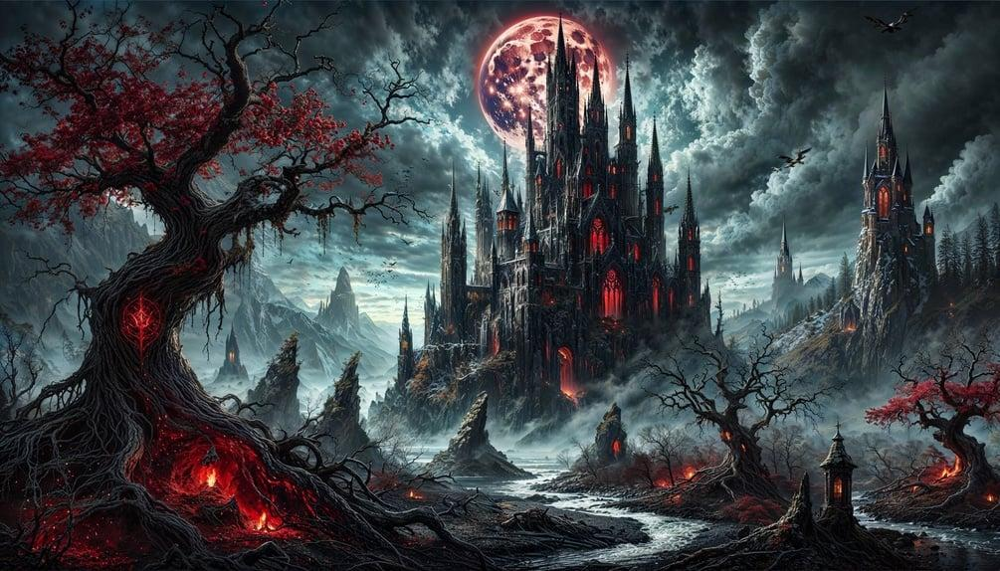

# VARYX I: THE ETERNAL BLOODMAGE ## მარადიული სისხლის მაგი ჟანრი: ბნელი ფენტეზი, ზებუნებრივი მისტიკა, მოქმედება და დრამა. მთავარი გმირი: ავერონი (Averon), ახალგაზრდა ჯადოქარი, რომელიც აკრძალული რიტუალის შემდეგ ოთხი ძალის მატარებლად იქცევა და ახალ სახელს იღებს — VARYX. ფილმის მთავარი ფრაზა: „ზოგი იბადება ძალაუფლებისთვის. ზოგი მას იძენს. ზოგი კი კვდება და ბრუნდება, რათა თავად გახდეს ის, რისიც სამყაროს ყველაზე მეტად ეშინია.“ # პროლოგი — სამყარო, რომელსაც ეშინოდა სიბნელის ათასობით წლის წინ სამყარო ოთხ უძველეს ძალას შორის ბალანსით არსებობდა. პირველი იყო ვამპირული ძალა — სისხლი, სისწრაფე, ძალა და მტაცებლის ინსტინქტი. მეორე იყო Blood Arcana — უძველესი მაგია, რომელსაც შეეძლო სისხლის, სულებისა და რეალობის კანონებზე ზემოქმედება. მესამე იყო ჯოჯოხეთური ძალა — ენერგია, რომელიც მოდიოდა სამყაროს იმ მხარიდან, სადაც ძველი არსებები და აკრძალული ცოდნა იმალებოდა. მეოთხე იყო უკვდავება — ისეთი მდგომარეობა, რომლის საიდუმლოც თავად უძველეს არსებებსაც კი ბოლომდე არ ესმოდათ. ეს ოთხი ძალა ერთმანეთისგან განცალკევებული იყო. ვამპირს შეეძლო ჯადოქრის მოკვლა. ჯადოქარს შეეძლო ვამპირის შეკავება. ჯოჯოხეთურ არსებას შეეძლო ორივეს განადგურება. უკვდავება კი არსებობის კანონებს ეწინააღმდეგებოდა. მაგრამ არსებობდა ერთი აკრძალული წინასწარმეტყველება. ძველ გრიმუარში ეწერა: „როცა მკვდრის სისხლი მაგიას შეერწყმება, როცა ჯოჯოხეთის ცეცხლი მის სხეულში დაიბადება და როცა სიკვდილი მას ვეღარ დაისაკუთრებს, გამოჩნდება ის, ვისაც ოთხი სამეფო ერთდროულად შეეშინდება. ის არ იქნება არც ვამპირი, არც ჯადოქარი და არც დემონი. ის იქნება დასასრული ძველი წესრიგისა. მისი სახელი იქნება VARYX.“ წინასწარმეტყველების ბოლო გვერდი ვიღაცას საუკუნეების წინ ამოეხია. არავინ იცოდა, ვინ დაწერა ეს სიტყვები. არავინ იცოდა, რას ნიშნავდა სახელი Varyx. და არავინ იცოდა, რომ წინასწარმეტყველება უკვე იწყებდა ახდენას. # თავი I — ავერონი ## სცენა 1 — აკრძალული ბიბლიოთეკა ადგილი: ნოქტერნის სამეფო, უძველესი ბიბლიოთეკა. დრო: შუაღამე. წვიმა ძველი ციხესიმაგრის ფანჯრებს ეხეთქება. ქარი დერეფნებში დაქრის. უზარმაზარ დარბაზში ათასობით წიგნია განლაგებული, მაგრამ დარბაზის ყველაზე შორეულ ნაწილში ერთი კარი დგას, რომელზეც შავი სიმბოლოებია ამოტვიფრული. კარის წინ ახალგაზრდა ჯადოქარი, ავერონი, დგას. მას შავი მოსასხამი აცვია. ხელში სანთელი უჭირავს. მისი მზერა ერთ კონკრეტულ წარწერას ეჭიდება. ავერონი: — თუ ეს ყველაფერი ტყუილია, რატომ ცდილობდნენ მის დამალვას? ის კარს ხელს ადებს. სიმბოლოები წამით ნათდება. ავერონი ჩურჩულით წარმოთქვამს შელოცვას და კარი ნელა იღება. შიგნით ძველი წიგნი დევს. ყდაზე სისხლისფერი ნიშანია გამოსახული. წიგნის სახელია: THE GRIMOIRE OF THE FIRST. ავერონი წიგნს ხსნის. პირველივე გვერდზე საკუთარ სახელს ხედავს. ავერონი: — არა... ეს შეუძლებელია. გვერდზე წერია: „ავერონი. ის, ვინც სიკვდილს უნდა შეხვდეს, რათა ოთხი ძალის კარი გაიხსნას.“ უეცრად სანთელი ქრება. ბიბლიოთეკის სიღრმიდან ხმა ისმის. უცნობი ხმა: — ბოლოს და ბოლოს, მოხვედი. ავერონი სწრაფად ბრუნდება. მის უკან არავინ დგას. ავერონი: — ვინ ხარ? უცნობი ხმა: — შეკითხვა არასწორად დასვი. უნდა იკითხო, ვინ ვიყავი. წიგნი თავისით იკეტება. და ავერონი პირველად გრძნობს, რომ ბიბლიოთეკაში მარტო არ არის. ## სცენა 2 — მასწავლებლის გაფრთხილება ავერონი წიგნს მალავს და ბიბლიოთეკიდან გამოდის. დერეფანში მას თავისი მასწავლებელი, მაგისტრი ელდრიკი, ხვდება. ელდრიკი ათწლეულების განმავლობაში ასწავლიდა მას მაგიის გამოყენებას. ელდრიკი ავერონის ხელში გრიმუარს ხედავს და სახე ეცვლება. ელდრიკი: — საიდან იპოვე ეს? ავერონი: — იქ, სადაც სამეფოს ყველაზე საშიში საიდუმლოებები ინახება. ელდრიკი: — და შენ ფიქრობ, რომ მზად ხარ მათ გასაგებად? ავერონი: — არა. მაგრამ მინდა ვიცოდე, რატომ არის ჩემი სახელი წიგნში, რომელიც საუკუნეებით ადრე დაიწერა. ელდრიკი ჩუმდება. ავერონი: — შენ რაღაც იცი. ელდრიკი: — ვიცი, რომ არსებობს ცოდნა, რომლის შეძენაც ადამიანს ძვირად უჯდება. ავერონი: — და თუ ამ ცოდნის გარეშე ვერ გადავრჩები? ელდრიკი მას თვალებში უყურებს. ელდრიკი: — მაშინ უნდა იპოვო სხვა გზა. იმიტომ, რომ ეს წიგნი პასუხებს კი არ გაძლევს, ავერონ... ის შენგან რაღაცას ითხოვს. ავერონი: — რას? ელდრიკი: — ყველაფერს. ავერონი მიდის, მაგრამ ელდრიკი მის ზურგს უკან ერთ სიტყვას ჩურჩულებს. ელდრიკი: — Varyx... # თავი II — პირველი სისხლი ## სცენა 3 — ნოქტერნის დაცემა რამდენიმე ღამის შემდეგ ნოქტერნის სამეფოს საზღვარზე უცნაური მოვლენები იწყება. მოსახლეობა იკარგება. ძველი სამარხებიდან ხმები ისმის. ტყეში შავი კვამლი ჩნდება, რომელსაც ჩვეულებრივი ცეცხლი ვერ აქრობს. ავერონი სამეფოს მცველებთან ერთად სოფელში მიდის. იქ ყველაფერი მიტოვებულია. მაგრამ ერთ სახლში სანთელი ანთია. ავერონი შიგნით შედის და კედელზე სისხლისფერი სიმბოლოს დანახვისას ჩერდება. ეს სიმბოლო ზუსტად იმ ნიშანს ჰგავს, რომელიც გრიმუარის ყდაზე იყო გამოსახული. მიწიდან ჩურჩული ისმის. ხმა: — კარი გაიღება... ავერონი უკან იხევს. უეცრად ფანჯარა იმსხვრევა. ოთახში ჩრდილი შემოდის და მცველებს თავს ესხმის. ეს ჩვეულებრივი ვამპირი არ არის. მისი თვალები წითლად ანათებს, ხოლო ხელებზე შავი ენერგია მოძრაობს. ავერონი შელოცვას წარმოთქვამს. ავერონი: — Ignis Arcana! ლურჯი ცეცხლი ჩრდილს ურტყამს და უკან აგდებს. მაგრამ არსება წამებში ისევ დგება. არსება: — შენ ჯერ კიდევ ფიქრობ, რომ ჩვეულებრივი ჯადოქარი ხარ? ავერონი: — რა ხარ? არსება: — ის, რაც შენ უნდა გახდე. არსება ქრება. სანამ ავერონი მის კვალს დაკარგავს, იატაკზე გრიმუარის მეორე ფრაგმენტს პოულობს. მასზე ახალი წარწერაა: „ოთხი ძალა ერთ სხეულში ვერ იარსებებს, თუ სიკვდილი მათ შორის კარიბჭედ არ იქცა.“ ავერონი ხვდება, რომ ვიღაც მას განზრახ მიჰყავს ამ საიდუმლოსკენ. და რომ დრო იწურება. ## სცენა 4 — არჩევანი ავერონი ბრუნდება ციხესიმაგრეში და ელდრიკს ყველაფერს უყვება. ელდრიკი აღიარებს, რომ წინასწარმეტყველების შესახებ იცოდა. ავერონი: — შენ იცოდი, რომ ეს ჩემზე იყო დაწერილი? ელდრიკი: — ვიცოდი, რომ შენს დაბადებასთან დაკავშირებული რაღაც უჩვეულო იყო. ავერონი: — რას მალავ? ელდრიკი ძველ ყუთს ხსნის. შიგნით წერილია, რომელიც ავერონის დაბადების ღამეს დაწერეს. წერილში ნათქვამია, რომ იმ ღამეს ცაზე ოთხი უცნაური ნიშანი გამოჩნდა: სისხლისფერი მთვარე, შავი ელვა, ჩაბნელებული ვარსკვლავები და ცეცხლისფერი რკალი. ელდრიკი: — შენ არ ხარ წინასწარმეტყველების ჩვეულებრივი ნაწილი, ავერონ. შეიძლება სწორედ შენ იყო მიზეზი, რის გამოც ის დაიწერა. ავერონი: — მაშინ მითხარი, როგორ შევაჩერო ეს. ელდრიკი: — ჯერ უნდა გავიგოთ, ვინ დგას ყველაფრის უკან. ავერონი გრიმუარს მაგიდაზე დებს. წიგნი თავისით იშლება. ახალი გვერდი ჩნდება. მასზე მხოლოდ სამი სიტყვაა: FIND THE FIRST. იპოვე პირველი. # თავი III — The First ## სცენა 5 — მიწისქვეშა ტაძარი ავერონი და ელდრიკი სამეფოს ჩრდილოეთით მდებარე აკრძალულ ტერიტორიაზე მიემგზავრებიან. ლეგენდის თანახმად, იქ არსებობდა ტაძარი, რომელიც ყველა ცნობილი სამეფოს გაჩენამდე აშენდა. ტაძრის შესასვლელთან წარწერაა: „ვინც პირველს ეძებს, უნდა მზად იყოს პასუხისთვის, რომელიც სამყაროს შეცვლის.“ შიგნით შესვლისას კედლებზე უძველესი არსებებია გამოსახული. ზოგი მათგანი ვამპირს ჰგავს, ზოგი ჯადოქარს, ზოგიც საერთოდ ადამიანურ ფორმას არ ატარებს. დარბაზის ცენტრში შავი ქვა დგას. ავერონი მას ხელს ადებს. მთელი ტაძარი ირყევა. ქვის ზედაპირზე ადამიანის სახე ჩნდება. The First: — ავერონ. ავერონი: — ვინ ხარ? The First: — მე ვიყავი მაშინ, როცა შენს სამყაროს სახელი ჯერ კიდევ არ ჰქონდა. ავერონი: — შენ დაწერე წინასწარმეტყველება? The First: — არა. მე ვცადე მისი შეჩერება. ელდრიკი გაოცებული უყურებს ქვას. ელდრიკი: — შენ ხომ მხოლოდ ლეგენდა ხარ... The First: — ლეგენდები მაშინ ჩნდება, როცა სიმართლე ზედმეტად საშიში ხდება. The First ავერონს უხსნის, რომ ოთხი ძალა ოდესღაც ერთი პირველყოფილი ენერგიის ნაწილები იყო. მაგრამ რაღაც მოხდა. ენერგია დაიშალა, ძალები ერთმანეთს დაშორდა და სამყაროს წესრიგი შეიქმნა. ავერონი: — და ახლა ისინი ისევ უნდა გაერთიანდნენ? The First: — არა ყველა სხეულში. მხოლოდ ერთში. მაგრამ ასეთი სხეული უნდა მოკვდეს, რათა თავიდან დაიბადოს. ავერონი: — მე რატომ? The First ჩუმდება. The First: — იმიტომ, რომ შენში უკვე არსებობს ის, რასაც სხვა ადამიანები მთელი სიცოცხლე ეძებენ. ავერონი: — რა? The First: — არჩევანი. უეცრად ტაძრის კედლები იბზარება. შავი ენერგია იატაკზე ვრცელდება. The First-ის სახე ქრება. ბოლო სიტყვები ექოდ ისმის: The First: — როცა სიკვდილის კარს გააღებ, უკან დასაბრუნებელი გზა აღარ გექნება. ## სცენა 6 — გრიმუარის ნამდვილი საიდუმლო ტაძრიდან დაბრუნების შემდეგ ავერონი გრიმუარს თავიდან ბოლომდე სწავლობს. ის აღმოაჩენს აკრძალულ რიტუალს — რიტუალს, რომელიც ოთხი ძალის ერთ სხეულში გაერთიანებას გულისხმობს. მაგრამ რიტუალს სამი პირობა აქვს: 1. სხეული უნდა იყოს მაგიის მატარებელი. 2. სისხლმა უნდა მიიღოს ვამპირული ძალა და ჯოჯოხეთური ენერგია. 3. სიკვდილი უნდა იქცეს გარდაქმნის საზღვრად, რომლის გადალახვაც უკვდავებას შეუძლია. ავერონი ხვდება, რომ რიტუალი უბრალოდ ძალის მოპოვება არ არის. ეს საკუთარი არსებობის შეცვლაა. ელდრიკი: — თუ რიტუალს დაიწყებ, შეიძლება ვეღარასდროს იყო ის, ვინც ახლა ხარ. ავერონი: — და თუ არ დავიწყებ, სხვები მოკვდებიან. ელდრიკი: — შენ არ ხარ ვალდებული, მთელი სამყარო საკუთარ მხრებზე აიღო. ავერონი: — მაგრამ თუ შემიძლია მისი გადარჩენა, როგორ დავუშვა, რომ არაფერი გავაკეთო? ელდრიკი პასუხს ვერ პოულობს. ავერონი გრიმუარს ხურავს. ავერონი: — მე ამ ძალას ბოროტებისთვის არ გამოვიყენებ. ელდრიკი: — ძალა არ გპირდება, რომ შენს სიტყვებს დაემორჩილება. ავერონი: — მაშინ მე ვაიძულებ, რომ დამემორჩილოს. # თავი IV — სიკვდილი და დაბადება ## სცენა 7 — აკრძალული რიტუალი რიტუალი იწყება უძველეს მიწისქვეშა დარბაზში. კედლებზე ოთხი სიმბოლოა ამოტვიფრული. პირველი წითლად ანათებს. მეორე ლურჯად. მესამე შავი ცეცხლით იფარება. მეოთხე კი სინათლეს საერთოდ არ ირეკლავს. ავერონი წრის ცენტრში დგას. ელდრიკი რიტუალის ბოლო სიტყვებს კითხულობს. ელდრიკი: — ავერონ, კიდევ შეგიძლია გაჩერდე. ავერონი: — თუ გავჩერდები, ეს ყველაფერი კვლავ განმეორდება. ელდრიკი: — არ იცი, რას გახდები. ავერონი: — ვიცი, რატომ ვაკეთებ ამას. ავერონი ხელებს მაღლა სწევს. ავერონი: — Sanguis. Arcana. Infernum. Aeternum. ოთხი სიმბოლო ერთდროულად ინთება. ჰაერი ირყევა. წითელი ენერგია ავერონის გარშემო ტრიალებს. მაგიური ნიშნები მის სხეულს ეხვევა. შავი ალი წრეს ავსებს, ხოლო დარბაზის ცენტრში სივრცე თითქოს იხლიჩება. ავერონი ძალას ვეღარ აკონტროლებს. ავერონი: — ელდრიკ! შეაჩერე! ელდრიკი: — უკვე ვეღარ ვაჩერებ! რიტუალი სრულდება. დარბაზში სრული სიჩუმე ჩამოწვება. ავერონი მიწაზე უძრავად წევს. ელდრიკი მის გვერდით მუხლს იყრის. ელდრიკი: — ავერონ? პასუხი არ არის. ელდრიკი თავს ხრის. ელდრიკი: — მაპატიე... უცებ ავერონის თითები მოძრაობს. მერე მისი თვალები იხსნება. მათი ფერი აღარ არის ისეთი, როგორიც ადრე. მისი თვალების გარშემო სისხლისფერი რგოლი ჩნდება, ხოლო გუგებში შავი ენერგია მოძრაობს. ავერონი ნელა დგება. მისი სმენა იმდენად ძლიერდება, რომ ესმის ელდრიკის გულისცემა, ქვის მიღმა მოძრავი მწერები და ტაძრის შორეულ ნაწილში ჩამოვარდნილი წყლის წვეთიც კი. მის ხელისგულზე წითელი სიმბოლო ჩნდება. ელდრიკი: — ავერონ... შენ დაბრუნდი. ავერონი საკუთარ ხელებს უყურებს. ავერონი: — არა. ის თავს სწევს. ავერონი: — ავერონი აღარ ვარ. დარბაზი სისხლისფერი შუქით ივსება. ავერონი: — მე ვარ VARYX. ## სცენა 8 — ოთხი ძალის გამოღვიძება გარდაქმნის შემდეგ ვარიექსი საკუთარ შესაძლებლობებს აღმოაჩენს. პირველი ძალა — Vampiric Power. მისი მოძრაობა თითქმის შეუმჩნეველია. ერთი წამით დარბაზის ცენტრში დგას, შემდეგ კი მეორე ბოლოში ჩნდება. მას შეუძლია იგრძნოს სხვა არსებების სისხლი, გაიგოს მათი გულისცემა და აღიქვას საფრთხე მანამდე, სანამ ის გამოჩნდება. მეორე ძალა — Blood Arcana. ვარიექსი ხელის მოძრაობით ჰაერში სისხლისფერი სიმბოლოების შექმნას იწყებს. ის მაგიას ჩვეულებრივი შელოცვებივით აღარ იყენებს. მისი ნება თავად იქცევა შელოცვის ნაწილად. ვარიექსი: — Crimson Dominion. მის გარშემო წითელი რკალი ჩნდება. ქვის სვეტები ჰაერში იწევა და შემდეგ თავის ადგილას ბრუნდება. ვარიექსი ხელს ხრის და ენერგია მაშინვე ქრება. ელდრიკი: — ასეთი კონტროლი... ეს შეუძლებელია. ვარიექსი: — ჯერ კიდევ არ ვიცი, რა შემიძლია. მესამე ძალა — Infernal Energy. ვარიექსის თითებს შორის შავი ალი ჩნდება. ეს ჩვეულებრივი ცეცხლი არ არის. ის სინათლეს შთანთქავს და მაგიურ ენერგიაზე რეაგირებს. როცა ვარიექსი ხელს კედელს ადებს, შავი ალი ზედაპირზე ვრცელდება, მაგრამ ქვას არ წვავს — ის კედელში დამალულ უძველეს სიმბოლოებს ააშკარავებს. მეოთხე ძალა — Immortality. ვარიექსი ცდილობს გაიგოს, რა შეიცვალა მის არსებობაში. ის საკუთარ სხეულში ვეღარ გრძნობს ჩვეულებრივ სიცოცხლესთან დაკავშირებულ საზღვრებს. მისი არსება თითქოს სიკვდილის წესებს აღარ ემორჩილება. მაგრამ გრიმუარში ერთი გაფრთხილება წერია: „უკვდავება არ ნიშნავს, რომ ყველაფერი იცი. ის მხოლოდ იმას ნიშნავს, რომ შენი ისტორია ჯერ დასრულებული არ არის.“ ვარიექსი წიგნს ხურავს. ვარიექსი: — მაშინ გავიგებ, ვინ დაწერა ეს სიტყვები. # თავი V — Crimson Dominion ## სცენა 9 — პირველი გამოცდა ვარიექსის გარდაქმნიდან რამდენიმე დღის შემდეგ ნოქტერნში ახალი არსება ჩნდება. მას მორვანი ეწოდება. ის ძველი ჯოჯოხეთური მცველია, რომელიც საუკუნეების განმავლობაში გრიმუარის საიდუმლოს იცავდა. მორვანი ციხესიმაგრის კარიბჭესთან ჩნდება. მორვანი: — შენ ის ხარ, ვინც ოთხი ძალის საზღვარი დაარღვია. ვარიექსი: — თუ ჩემი ნახვა გინდოდა, უბრალოდ დაგეძახა. მორვანი: — შენ ჯერ კიდევ ვერ ხვდები, რა გააკეთე. ვარიექსი: — მაშინ ამიხსენი. მორვანი ხელებს შლის. შავი ენერგია მთელ ეზოს ფარავს. ვარიექსი გვერდზე ინაცვლებს და მის დარტყმას თავს არიდებს. მორვანი მიწას ხელს ურტყამს. შავი ენერგიის ტალღა ვარიექსისკენ მიიწევს. ვარიექსი ხელებს მაღლა სწევს. ვარიექსი: — Crimson Dominion. სისხლისფერი სიმბოლოები ჰაერში ჩნდება. შავი ტალღა ჩერდება. შემდეგ ვარიექსი თითებს კუმშავს და ენერგიას უკან აბრუნებს. მორვანი კედელს ეჯახება. მორვანი: — შენ ამ შელოცვას ვერ უნდა იყენებდე! ვარიექსი: — როგორც ჩანს, წესები შეიცვალა. მორვანი წამოდგომას ცდილობს, მაგრამ ვარიექსი უკვე მის წინ დგას. ვარიექსი: — ვინ გამოგგზავნა? მორვანი: — ის, ვინც შენს დაბრუნებას ელოდა. ვარიექსი: — The First? მორვანი იღიმის. მორვანი: — შენ ჯერ კიდევ გგონია, რომ პირველი ყოველთვის დასაწყისია? მორვანი შავ კვამლად იქცევა და ქრება. მის ადგილას ერთი შავი ბეჭედი რჩება. ბეჭედზე ახალი წარწერაა: THE FIRST IS WATCHING. ## სცენა 10 — ძალას ფასი აქვს ვარიექსი ფიქრობს, რომ ახალი ძალები მის კონტროლს ექვემდებარება. მაგრამ იმავე ღამეს ის პირველად კარგავს კონტროლს. ციხესიმაგრის დერეფანში ადამიანების ხმებს ისმენს. მათი სისხლის სუნი მის ვამპირულ ინსტინქტებს აღვიძებს. ვარიექსი ჩერდება. ვარიექსი: — არა... მე ამას არ დავუშვებ. ის თვალებს ხუჭავს და მაგიის გამოყენებას ცდილობს. მაგრამ Blood Arcana მის ემოციებს პასუხობს და არა მხოლოდ მის ბრძანებებს. დერეფნის კედლებზე წითელი სიმბოლოები ჩნდება. ელდრიკი ხმაურზე მოდის. ელდრიკი: — ვარიექს! მომისმინე! ვარიექსი: — ახლოს არ მოხვიდე! ელდრიკი: — შენ შეგიძლია ამის კონტროლი. ვარიექსი: — არ იცი, რას ვგრძნობ! ელდრიკი: — მართალია. მაგრამ ვიცი, ვინ იყავი მანამდე. ეს სიტყვები ვარიექსს აჩერებს. ის ნელა სუნთქვას იწყებს, თუმცა უკვე აღარ სჭირდება. სისხლისფერი შუქი ქრება. ვარიექსი კედელს ეყრდნობა. ვარიექსი: — თუ ძალა ჩემზე ძლიერი აღმოჩნდა, რა დამრჩება? ელდრიკი: — არჩევანი. ის, რაც The First-მა გითხრა. ვარიექსი ელდრიკს უყურებს. ვარიექსი: — მაშინ ჩემი პირველი წესი იქნება: მე არ გავხდები მონსტრი მხოლოდ იმიტომ, რომ მონსტრის ძალა მაქვს. ელდრიკი თავს უქნევს. მაგრამ ორივემ იცის, რომ ყველაზე დიდი გამოცდა ჯერ წინ არის. # თავი VI — მტერი, რომელიც არ კვდება ## სცენა 11 — The First-ის მოწვევა რამდენიმე კვირის შემდეგ გრიმუარის ყველა გვერდი სისხლისფრად ინთება. წიგნი თავისით იხსნება და ვარიექსის წინ ჰაერში ჩერდება. გვერდზე რუკა ჩნდება. რუკაზე მონიშნულია ადგილი, რომელსაც The Hollow Throne ეწოდება. ელდრიკი რუკას უყურებს და ფერს კარგავს. ელდრიკი: — იქ არ უნდა წახვიდე. ვარიექსი: — რატომ? ელდრიკი: — ეს ადგილი რეალურ სამყაროსა და იმ სივრცეს შორისაა, სადაც უძველესი არსებები იყვნენ ჩაკეტილი. ვარიექსი: — და The First იქ არის? ელდრიკი: — თუ რუკა მართალია, დიახ. ვარიექსი: — მაშინ იქ მივდივარ. ელდრიკი: — ეს ხაფანგია. ვარიექსი: — შეიძლება. მაგრამ თუ ჩემი ძალების საიდუმლოს გაგება მინდა, ვეღარ გავიქცევი. ელდრიკი ვარიექსს ძველ ამულეტს აძლევს. ელდრიკი: — ეს ამულეტი შენს მაგიას ვერ გააძლიერებს. მაგრამ შეგახსენებს, რომ ძალა შენი პიროვნების შემცვლელი არ უნდა გახდეს. ვარიექსი ამულეტს იღებს და გზას ადგება. ## სცენა 12 — ცარიელი ტახტი The Hollow Throne უზარმაზარი მიწისქვეშა დარბაზია. მის ცენტრში შავი ტახტი დგას. ტახტის უკან კედელი არ არსებობს — მხოლოდ უფსკრულია, რომელშიც ვარსკვლავების მსგავსი სინათლეები მოძრაობს. ვარიექსი დარბაზში შედის. ვარიექსი: — The First! ვიცი, რომ აქ ხარ! სიჩუმე. შემდეგ ტახტზე ჩრდილი ჩნდება. The First: — შენ სწრაფად ისწავლე. ვარიექსი: — მინდა ვიცოდე, რატომ შემარჩიე. The First: — მე არ შემირჩევიხარ. ვარიექსი: — მაშინ ვინ? The First: — შენ თვითონ მიხვედი იმ გზამდე, რომლის არსებობაც არავის უნდა სცოდნოდა. ვარიექსი: — ოთხი ძალა რატომ გაერთიანდა ჩემში? The First ნელა დგება. The First: — იმიტომ, რომ სამყაროს ბალანსი ირღვევა. ოთხი ძალა კვლავ ერთმანეთს ეძებს. თუ ისინი უკონტროლოდ შეერთდებიან, ყველაფერი, რაც არსებობს, საფრთხეში აღმოჩნდება. ვარიექსი: — და მე უნდა შევაჩერო ეს? The First: — შენ შეგიძლია შეაჩერო. მაგრამ შეგიძლია გახდე მიზეზიც. ვარიექსი მუშტებს კრავს. ვარიექსი: — მაშინ მასწავლე კონტროლი. The First თავს აქნევს. The First: — მე შემიძლია გაჩვენო შენი მომავალი. მაგრამ ვერ გეტყვი, რომელ გზას აირჩევ. ტახტის უკან სინათლე იშლება. ვარიექსი ხედავს სამ სურათს. პირველში ის დანგრეულ სამეფოს შუაგულში დგას. მეორეში — შავ ტახტზე ზის, ხოლო მის წინ ყველა ზებუნებრივი არსება მუხლმოყრილია. მესამეში — მისი სხეული სინათლესა და სიბნელეს შორის ქრება. The First: — ერთ გზაზე შენ სამყაროებს დაიპყრობ. — მეორეზე მათ გადაარჩენ. — მესამეზე კი შეიძლება თვითონაც აღარ იარსებო. ვარიექსი: — და რომელი გზაა სწორი? The First: — სწორი გზა არ არსებობს, ვარიექს. არსებობს მხოლოდ ის, რისთვისაც მზად ხარ, პასუხი აგო. უეცრად The First-ის თვალები შავდება. ტახტის ქვეშიდან შავი ბზარები ვრცელდება. The First უკან იხევს. ვარიექსი: — რა ხდება? The First: — ის მოვიდა... ვარიექსი: — ვინ? The First ვარიექსს უყურებს. The First: — ის, ვის გამოც ოთხი ძალა უნდა გაერთიანებულიყო. ტახტის უკან სივრცე იხლიჩება. და რაღაც იწყებს გამოღვიძებას. # თავი VII — სამყაროს ბზარი ## სცენა 13 — ძალა, რომელსაც სახელი არ აქვს ბზარიდან შავი ენერგია გამოდის. ეს არც დემონია, არც ვამპირი და არც ჩვეულებრივი ჯადოქარი. მისი ფორმა მუდმივად იცვლება. The First მუხლს იყრის. ვარიექსი: — შენ მისი გეშინია? The First: — მე მისი გაჩერება ვცადე, როცა სამყარო ჯერ კიდევ ახალგაზრდა იყო. ვარიექსი: — რა არის? The First: — სიცარიელე, რომელიც ყველაფერს თავის ნაწილად აქცევს. არსება ვარიექსისკენ იწევს. ვარიექსი Crimson Dominion-ს იყენებს. წითელი რგოლები არსებას გარს ეხვევა, მაგრამ წამებში შავდება და ქრება. ვარიექსი ჯოჯოხეთურ ცეცხლს უშვებს. არსება ცეცხლს შთანთქავს. შემდეგ ვარიექსი Blood Arcana-ს მთელ ძალას იყენებს. ვარიექსი: — CRIMSON DOMINION! დარბაზი სისხლისფერი სინათლით იფარება. მაგრამ არსება მხოლოდ უფრო დიდდება. The First: — შეწყვიტე! ის შენს ძალას იყენებს! ვარიექსი უკან იხევს. ვარიექსი: — მაშინ როგორ უნდა შევაჩერო?! The First: — ოთხივე ძალით ვერ დაამარცხებ იმას, რაც ძალების გაყოფით წარმოიშვა. ვარიექსი: — მაშ, რა უნდა გავაკეთო? The First: — უნდა გაიგო, რას ნიშნავს მათი გაერთიანება. არსება ტახტს ანადგურებს. სივრცე ირღვევა. The First ვარიექსს უკანასკნელად უყურებს. The First: — დაიმახსოვრე, ვარიექს. შენ არ ხარ მხოლოდ ძალა. შენ ხარ არჩევანი, რომელსაც ეს ძალა ჯერ ვერ წაგართმევს. The First შავ ნაპრალში ქრება. ვარიექსი მარტო რჩება. არსება მისკენ მოიწევს. ვარიექსი ოთხივე ძალას ერთდროულად იხმობს, მაგრამ ამჯერად მათი გამოყენების ნაცვლად საკუთარ თავში აკვირდება მათ საზღვრებს. ვამპირული ძალა მის სხეულს აძლიერებს. Blood Arcana მის ნებას რეალობას უკავშირებს. ჯოჯოხეთური ენერგია ნაპრალის სიღრმეს პასუხობს. უკვდავება კი ვარიექსს საშუალებას აძლევს, ძალების ურთიერთქმედებას გაუძლოს. ვარიექსი ხვდება: ოთხი ძალა ერთმანეთის დასამარცხებლად არ შექმნილა. მათი დანიშნულებაა ერთმანეთის დაბალანსება. ## სცენა 14 — Eternal Severance ვარიექსი თვალებს ხუჭავს. ვარიექსი: — მე არ ვარ შენი იარაღი. არსება ჩერდება. ვარიექსი: — მე არ ვარ შენი კარი. წითელი და შავი ენერგია მის ირგვლივ წრიულად იწყებს მოძრაობას. ვარიექსი: — და მე არ გავხდები ის, რაც შენ გინდა. ვარიექსი ხელს მაღლა სწევს. მისი ხელისგულის სიმბოლო იცვლება. ოთხი ძალა ერთ წერტილში იკრიბება, მაგრამ აღარ ეჯახება ერთმანეთს. ვარიექსი: — ETERNAL SEVERANCE! დარბაზში ხმა წყდება. სინათლე და სიბნელე ერთ ხაზად იქცევა. ვარიექსი ამ ხაზს ნაპრალისკენ მიმართავს. ეს შელოცვა არსებას უბრალოდ არ ესხმის თავს — ის მის კავშირს რეალობასთან წყვეტს. ნაპრალი ვიწროვდება. არსება ცდილობს ენერგიის შთანთქმას, მაგრამ ვეღარ ახერხებს, რადგან ვარიექსი მის ძალას კი არ უპირისპირდება, არამედ მის სამყაროში დარჩენის საშუალებას აუქმებს. შავი ფორმა იშლება. სივრცე ნელა იხურება. ბოლო წამს არსება ვარიექსს უყურებს. უცნობი არსება: — შენ ფიქრობ, რომ დამამარცხე... ვარიექსი: — მე შენი გზა დავხურე. უცნობი არსება: — გზა... ყოველთვის არსებობს. ნაპრალი იხურება. და ყველაფერი ჩუმდება. ვარიექსი მუხლზე ეცემა. მისი ძალები სუსტდება. მისი სხეული ისევ უძლებს, მაგრამ ის გრძნობს, რომ Eternal Severance-მა რაღაც წაართვა — არა მის უკვდავებას, არამედ სამყაროსთან არსებულ კავშირს. ის ვეღარ გრძნობს The First-ის არსებობას. ვეღარ გრძნობს გრიმუარის მაგიას. ვეღარ გრძნობს იმ ძალას, რომელმაც აქამდე მიიყვანა. მხოლოდ საკუთარ თავში დარჩენილ სიჩუმეს გრძნობს. # თავი VIII — ფინალი ## სცენა 15 — დაბრუნება ვარიექსი ნოქტერნში ბრუნდება. ციხესიმაგრის ნაწილი დანგრეულია, მაგრამ სამეფო გადარჩა. ელდრიკი კარიბჭესთან ელოდება. როცა ვარიექსს ხედავს, მის სახეზე შვება ჩნდება. ელდრიკი: — მეგონა, ვეღარ გნახავდი. ვარიექსი: — მეც. ელდრიკი მის ხელებს უყურებს. ელდრიკი: — ძალა ისევ გაქვს? ვარიექსი ხელისგულს ხსნის. წითელი სიმბოლო ნელა ჩნდება. შემდეგ მის გარშემო შავი ენერგია მოძრაობს. ვარიექსი: — მაქვს. მაგრამ ახლა ვიცი, რომ ძალის არსებობა არ ნიშნავს, რომ მისი გამოყენება ყოველთვის საჭიროა. ელდრიკი: — და The First? ვარიექსი შორეულ ჰორიზონტს უყურებს. ვარიექსი: — გაქრა. ელდრიკი: — მოკვდა? ვარიექსი: — არ ვიცი. ის რამდენიმე წამით ჩუმდება. ვარიექსი: — და სწორედ ეს მაფიქრებს. ## სცენა 16 — სახელი, რომელიც ისტორიაში დარჩა იმ ღამეს ვარიექსი გრიმუარს კვლავ ხსნის. მისი გვერდების უმეტესობა ცარიელია. მაგრამ ბოლო გვერდზე ახალი წინადადება ჩნდება: „პირველი კარი დაიხურა. მაგრამ მარადიულობას დასასრული არ აქვს.“ ვარიექსი წიგნს ხურავს. შემდეგ ციხესიმაგრის უმაღლეს კოშკზე ადის. ქვემოთ ნოქტერნის სამეფო ჩანს. ის ხედავს ადამიანებს, რომლებიც საკუთარ ცხოვრებას აგრძელებენ და არც კი იციან, რამდენად ახლოს იყო მათი სამყარო განადგურებასთან. ვარიექსი, საკუთარ თავთან: — მე ავერონი ვიყავი. ის თვალებს ხუჭავს. ვარიექსი: — ახლა კი ვარ ის, ვინც საკუთარი გზა უნდა აირჩიოს. ქარი მის მოსასხამს არხევს. კამერა ნელა შორდება. ვარიექსი მარტო დგას კოშკზე, ხოლო ცაზე ღრუბლები იშლება. ფილმი თითქოს სრულდება. მაგრამ სინამდვილეში მთავარი საიდუმლო ჯერ არ გახსნილა. # პოსტკრედიტების სცენა — ის არ გამქრალა ეკრანი შავდება. რამდენიმე წამი სრული სიჩუმეა. შემდეგ კამერა The Hollow Throne-ის ნანგრევებს აჩვენებს. ტახტი განადგურებულია. კედლები დამსხვრეულია. სივრცე ცარიელია. მაგრამ იატაკზე ერთი პატარა, სისხლისფერი წვეთი ჩნდება. ის ნელა მოძრაობს. შემდეგ ჩერდება. წვეთის შიგნით შავი სიმბოლო იღვიძებს. უცნობი ხმა ისმის: უცნობი ხმა: — ოთხი ძალა გაერთიანდა... პაუზა. უცნობი ხმა: — მაგრამ მეხუთე არასოდეს ყოფილა დაკარგული. სისხლის წვეთი ქრება. კადრი იცვლება. ბნელ სივრცეში ორი თვალი იხსნება. უცნობი ხმა: — გაიღვიძე, ვარიექს. ეკრანზე წითელი ასოები ჩნდება: VARYX WILL RETURN THE BLOOD WAS ONLY THE BEGINNING. VARYX II: RISE OF THE BLOOD KINGDOM პირველი ფილმის დასასრული. # VARYX I-ის მთავარი კანონები და შედეგები ავერონი — ახალგაზრდა ჯადოქარი, რომელიც აკრძალული რიტუალის შემდეგ ვარიექსად გარდაიქმნება. სახეობა — Bloodborne Arch-Vampire / Arch-Vampire. პირველი ძალა — Vampiric Power. მეორე ძალა — Blood Arcana, სისხლის მაგია. მესამე ძალა — Infernal Energy, ჯოჯოხეთური ენერგია. მეოთხე ძალა — Immortality, უკვდავება. მთავარი შელოცვა — Crimson Dominion. საბოლოო შელოცვა — Eternal Severance. მთავარი საიდუმლო — The First-მა იცის წინასწარმეტყველების შესახებ, მაგრამ ყველაფერს არ ამხელს. ფინალი — ვარიექსი სამყაროს ბზარს ხურავს და უკვალოდ ქრება მისი კავშირი The First-თან. გაგრძელების მინიშნება — სისხლის წვეთში იღვიძებს უცნობი, მეხუთე ძალის სიმბოლო. # გაგრძელების საიდუმლო თუ ვარიექსმა ოთხი ძალა გააერთიანა, მაშინ რას ნიშნავს მეხუთე ძალა — და რატომ ეშინოდა მისი The First-საც კი? VARYX-ის ისტორია აქ არ მთავრდება.
